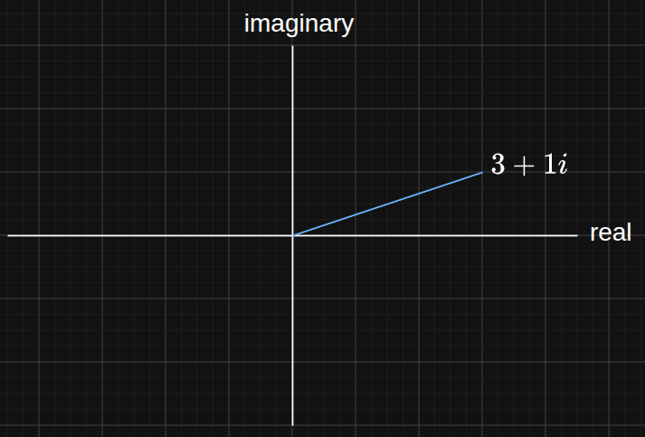

Complex numbers
Overview
Complex numbers were invented to easily represent rotations in 2 dimensions. It contains an extra direction along the imaginary axis.

Rotations are described using Euler's formula: $$ cos(\theta) + i\, sin(\theta) $$